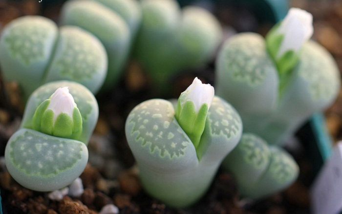

<!DOCTYPE html>
<html>
  <head>
    <meta charset="utf-8">
    <meta name="viewport" content="width=device-width, initial-scale=1.0, maximum-scale=1.0, user-scalable=0">
    <link rel="stylesheet" href="http://cdn.bootcss.com/font-awesome/4.6.3/css/font-awesome.min.css">
    <link rel="stylesheet" href="css/index.css">
    <title>公司动态</title>
  </head>
</html>
<body class="basicbg">
  <header class="topbar"><a href="#" class="fl"><i class="fa fa-angle-left"></i></a><a href="#" class="fr"><i class="fa fa-user"></i></a>
    <p>公司动态</p>
    <div class="fr"></div>
    <div class="clear"></div>
  </header>
  <div class="container">
    <div class="product-img-wrapper"></div>
    <div class="product-detail">
      <p class="data-product-desc">木棉花(kapok)是南方的特产，是广州市、高雄市以及攀枝花市的市花。五片拥有强劲曲线的花瓣，包围一束绵密的黄色花蕊，收束于紧实的花托，一朵朵都有饭碗那么大，迎着阳春自树顶端向下蔓延。木棉花又称英雄花，连它的坠落也分外的豪气，从树上落下的时候，在空中仍保持原状，一路旋转而下，然后"啪"一声落到地上。树下落英纷陈，花不褪色、不萎靡，很英雄地道别尘世。</p>
    </div>
  </div>
</body>